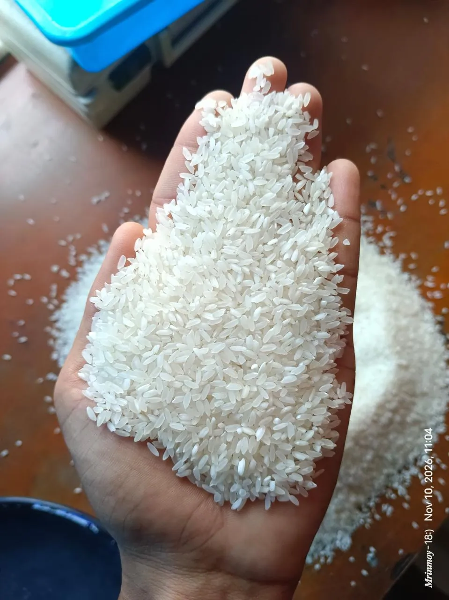

WHITE RICE
FEATURED FIRST / FOOD GRAIN
NON-BASMATI
INDIAN WHITE RICE
Non-Basmati Indian White Rice for wholesale and agricultural commodity trading enquiries. Our product gallery provides a closer look at supplied rice samples.
PRODUCT CATEGORYIndian Non-Basmati White Rice
BUYER REQUIREMENTSGrain specifications, quantity and packing
COMMERCIAL DETAILSConfirmed directly on enquiry